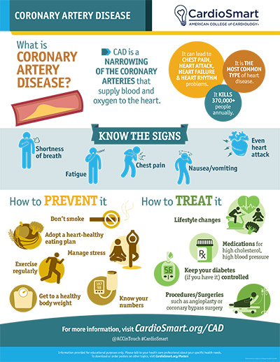

What Is Coronary Artery Disease?
Coronary artery disease (CAD) — also called coronary heart disease — happens when the arteries that supply blood to your heart muscle become narrowed or blocked by a buildup called plaque. It is the most common type of heart disease and the number one cause of heart attack in the United States. Because it is often preventable and always worth diagnosing early, it lies at the very heart of what a cardiologist does.
What Is Happening in the Arteries
The coronary arteries wrap around the outside of your heart and supply it with the oxygen-rich blood it needs to pump. Over time, cholesterol and other fats can build up inside their walls, forming a waxy deposit called plaque (a process called atherosclerosis). As plaque grows, it narrows the artery and can reduce blood flow — the way a pipe slows when mineral scale builds up inside it.
Plaque is not always stable. A plaque can crack or rupture, and a blood clot forms over the break. That clot can suddenly block the artery completely, cutting off blood flow to part of the heart muscle — which is a heart attack.

Symptoms
Not everyone with CAD feels symptoms, and symptoms can differ between men and women. When present, the classic one is angina: pressure, tightness, heaviness, or discomfort in the chest that often spreads to the shoulder, arm, jaw, or back. Common patterns to recognize:
- Stable angina — chest discomfort that predictably comes with physical effort (like walking uphill or climbing stairs), lasts a few minutes, and goes away with rest or a medication called nitroglycerin.
- Shortness of breath, sometimes as the main or only symptom, especially with activity.
- Fatigue or reduced exercise tolerance — things that used to be easy now feel harder.
- Less typical symptoms — discomfort in the neck or jaw, indigestion-like feeling, nausea, or sweating. Women may more often have shortness of breath, nausea, or back/jaw discomfort rather than classic chest pain.
CAD can also be silent, especially in people with diabetes or older adults — the disease can be present without any warning until a heart attack or a routine test finds it.
Stable Symptoms vs. Acute Events
There is a critical difference between stable angina and a heart attack, and the response is very different:
| Stable angina | Heart attack (ACS) |
|---|---|
| Predictable, comes with effort | Can happen at rest |
| Lasts only a few minutes | Persists, doesn't stop with rest |
| Relieved by rest or nitroglycerin | Not relieved by rest; usually a medical emergency |
If chest discomfort lasts more than a few minutes, is severe, or comes at rest — especially with sweating, nausea, or shortness of breath — call 911. Do not wait and do not drive yourself.
Risk Factors
Many risk factors for CAD are things you can change:
- Smoking — one of the most powerful, and quitting helps quickly.
- High blood pressure.
- High LDL (“bad”) cholesterol and high triglycerides.
- Diabetes.
- Obesity and physical inactivity.
- Unhealthy diet — high in processed foods, salt, and added sugar.
- Excess alcohol.
- Chronic stress.
- Sleep apnea.
Some factors you cannot change: older age, being male, and family history of early heart disease. Even so, controlling the factors you can change lowers your risk regardless of your age or family history.
How It Is Diagnosed
Your doctor first takes a careful history and may use tests to look for reduced blood flow or blockages:
- Blood tests — cholesterol, blood sugar, and others. A high-sensitivity troponin test can be used in urgent situations to detect heart muscle damage.
- ECG (electrocardiogram) — records the heart's electrical activity in the office or during symptoms.
- Stress testing — exercise on a treadmill, or medications if you can't exercise, sometimes combined with imaging to see how blood reaches the heart muscle. Options include a treadmill stress test, a nuclear stress test, or stress echocardiography. (See our treadmill stress test page and nuclear stress test page.)
- Coronary calcium score — a CT scan that identifies calcium in the coronary arteries; useful for people without symptoms who are at intermediate risk.
- Coronary CT angiography (CCTA) — a detailed CT picture of the artery walls.
- Cardiac catheterization (coronary angiography) — the most detailed test. A thin tube is guided into the heart arteries via the wrist or groin, dye is injected, and blockages are seen directly. It is often done when stress testing suggests significant disease or in an emergency. (See our cardiac catheterization page.)
Which tests are right for you depends on your symptoms, risk factors, and the results of earlier tests.
How It Is Treated
Treatment is built on two pillars: therapy that everyone with CAD should have, and procedures that restore blood flow when needed.
1. Medications and lifestyle for every patient
- Cholesterol-lowering medication (a statin, usually) — not just to lower a number, but to stabilize plaque so it is less likely to rupture.
- Blood thinners (aspirin or other antiplatelets) to prevent clots.
- Blood pressure control with the right mix of medications.
- Diabetes management.
- Lifestyle: stop smoking, follow a heart-healthy (DASH or Mediterranean-style) diet, exercise most days, reach a healthy weight, and treat sleep apnea.
- Cardiac rehabilitation — a medically supervised program of exercise and education, strongly recommended and very effective.
2. Procedures to restore blood flow
When symptoms or the anatomy warrant, blood flow can be restored directly. (See our procedures section.)
- Balloon angioplasty and stenting — during cardiac catheterization, a small balloon opens the narrowed artery and a mesh tube (stent) holds it open. This is the usual choice for one or a few blockages.
- Coronary bypass surgery (CABG) — a surgeon uses a healthy artery or vein to route blood around severe or multiple blockages. It is often recommended when many arteries are narrowed or when the main (left main) artery is blocked.
Procedures relieve symptoms and restore blood flow, but they do not cure the underlying disease — lifelong medication and lifestyle remain essential to keep plaque stable and prevent future events.
When to seek urgent care
Call 911 if you have chest pressure or pain that lasts more than a few minutes, especially if it comes with shortness of breath, sweating, nausea, lightheadedness, or discomfort in the arm, back, jaw, or neck. These can be signs of a heart attack. Minutes matter — early treatment saves heart muscle and lives.
Key Takeaways
- CAD is a buildup of plaque in the heart arteries that can reduce blood flow or cause a heart attack.
- It can be silent, so risk factors matter, and diagnosis often combines stress tests and imaging.
- Core treatment is medication and lifestyle for everyone — stents and bypass restore flow when needed.
- Treating plaque stability, not just the numbers, is the heart of prevention.
Reliable Sources
- CardioSmart (American College of Cardiology), Coronary Artery Disease — infographic
- CDC, Coronary Artery Disease
- American Heart Association, About Cardiovascular Disease
- 2023 ACC/AHA Guideline for the Management of Patients With Chronic Coronary Disease
This page is for general education only and does not replace advice from your doctor. If you have chest symptoms, new shortness of breath, or questions about your heart health, please contact the office.